- linux是一种独立于win,macOS的操作系统，对嵌入式，代码工作，开发实验有强大的支撑作用
- 在开始安装之前可以先选择你的需求：主要分为虚拟机安装与双系统共存
虚拟机安装优点
- 简单易上手，在windows下就能实现大部分linux的功能
- 具有强大的可修改性，遇到不喜欢的
删掉重新安装即可 - 存在及其强大的回滚与测试环境(毕竟没人会在实体机上
rm -rf /) - 可以更灵活的分配虚拟机资源
缺点
- 对系统占用大，没办法完全发挥linux体量小，占用小的优点
- 虚拟机中的图形性能可能不如直接在物理硬件上运行，特别是对于需要高性能图形处理的应用
- 虚拟机可能无法提供与物理机相同的实时响应能力，尤其是在高负载情况下
- 虚拟机可能不能为你提供完全兼容的硬件配置
实体机(双系统)安装的优点
- 完全发挥linux的轻量级，省资源的优点
- 对硬件几乎完全适配
- 安装双系统对windows启动和linux启动能提供更深刻的认识
- 双系统将win和linux从硬件层面隔离
缺点
- 麻烦
- 如果选用Arch系的linux发行版有可能会一次更新直接崩溃
- 系统回滚麻烦
- 需要你有一个U盘
1.0 选择你的linux版本
-
两大选择：Ubuntu 或 Arch系
-
arch系的有
- 原生arch linux
- 基于arch linux 的发行版 manjaro [笔者装的就是这个]
-
国产新秀deepin
TIP
新手建议装Ubuntu或deepin,特别是deepin(有开箱即用的优点，甚至原生支持中文输入法[笔者觉得manjaro的中文输入法是真的难用])
Ubuntu和arch系的区别就是软件/系统更新的区别
- Ubuntu每两年发布一个LTS（长期支持）版本，提供长达5年的安全更新和维护
- Arch采用滚动发布模型，意味着用户总是能够使用最新的软件和内核
- [虽然滚动更新模式可以让用户始终保持最新，但有时候更新可能会破坏系统的稳定性]
- Ubuntu提供了一个直观的图形用户界面，使得新用户可以轻松上手
- Arch Linux允许用户从安装开始就自定义他们的系统，提供了极大的灵活性
- !!!在安装难度上 Ubuntu < arch发行版manjaro <<<< 原生arch linux
- 据说arch linux 的网络配置都要手搓命令行和网关配置
2.0 虚拟机安装
由于笔者没在虚拟机上装过，所以可能有不准确的信息，欢迎和笔者报错
2.1 下载VMware
-
注意：在这里不要选择安装带有 linux 字样的软件，这里的linux表示在linux上运行的软件，因为我们是在windows上运行的，所以我们要安装 Windows版本的
-
安装时可能出现要求许可证的情况，可以选择购买或下载个人版
-
以下内容出现在本文纯属计算机二进制的意外组合造成的结果
4A4RR-813DK-M81A9-4U35H-06KND NZ4RR-FTK5H-H81C1-Q30QH-1V2LA JU090-6039P-08409-8J0QH-2YR7F 4Y09U-AJK97-089Z0-A3054-83KLA 4C21U-2KK9Q-M8130-4V2QH-CF810 MC60H-DWHD5-H80U9-6V85M-8280D ZA30U-DXF84-4850Q-UMMXZ-W6K8F AC590-2XW97-48EFZ-TZPQE-MYHEA YF39K-DLFE5-H856Z-6NWZE-XQ2XD AC15R-FNZ16-H8DWQ-WFPNV-M28E2 CZ1J8-A0D82-489LZ-ZMZQT-P3KX6 YA11K-6YE8H-H89ZZ-EXM59-Y6AR0
2.2 下载Linux系统iso(系统映像文件)
-
Arch linux[^1 ]
-
建议选择KDE Plasma或GNOME
just 桌面配置，后续可以改
2.3 配置虚拟机
-
打开VMware
-
创建新的虚拟机[选择(自定义)]

-
选择“安装程序光盘映像文件”，点击输入框旁边的“浏览”按钮

-
根据下载路径,找到下载好的镜像安装包,双击选择
-
注意安装位置！！！不许安装在C盘！！！
-
每个处理器的内核数量修改成 2，单击“下一步”
-
内存选择建议 4 GB，单击“下一步”
-
网络类型选择桥接1
-
默认两步
-
硬盘容量默认是 20 GB，按自己需求选择，不建议太小
-
接着默认下去
2.3 以Ubuntu系统为例 安装过程的配置
-
打开虚拟机
-
稍等片刻后，进入如下图的界面

- 改中文
- 默认安装

-
下图所示的界面检测到本台电脑（虚拟机）没有操作系统，询问是否要安装操作系统，默认选项“格式化磁盘然后安装Ubuntu”就是安装操作系统的选项，只是会清空虚拟机所有的磁盘*（是本台虚拟机的磁盘，不是宿主机的磁盘，所以不要大惊小怪）*，直接点“Install Now”即可
-
时区选上海
-
然后输入姓名、电脑名、账户和密码 一定要记得你的密码，很多终端操作都会用到这个密码
-
漫长安装
-
安装完成后会提示你重启，重启即可
-
有可能会遇到升级成 Ubuntu Pro， Ubuntu 系统的改善建议之类的提升，跳过即可
3.0 双系统安装
Important
双系统的安装复杂程度比虚拟机难出一个量级，且有潜在的对系统危险性的操作，错误地执行这些操作可能会给你的电脑带来无法进入系统之类的结果
在尝试安装双系统之前，请警惕这一过程可能带来的风险：操作失误可能导致数据丢失或系统无法启动。确保在开始之前备份所有重要数据，并且完全理解每一步操作的含义。如果你不熟悉分区、格式化或BIOS/UEFI设置，请先在虚拟机上练习或寻求专业人士的帮助。此外，安装过程中可能会覆盖启动项，确保你了解如何修复或恢复启动问题。
3.1操作之前
- 下载软件
- 傲梅分区助手[用于为磁盘分区，创建系统所需要的磁盘空间，修改为GPT引导]
- Rufus[用于将iso写入u盘 建议下载老版本3.15]
- diskgenius[用于删除旧的EFI分区]
3.1.1检查自己即将装系统的磁盘，确保其是GPT引导
-
如何操作？
- 右键win标识弹出这个窗口，选择磁盘管理 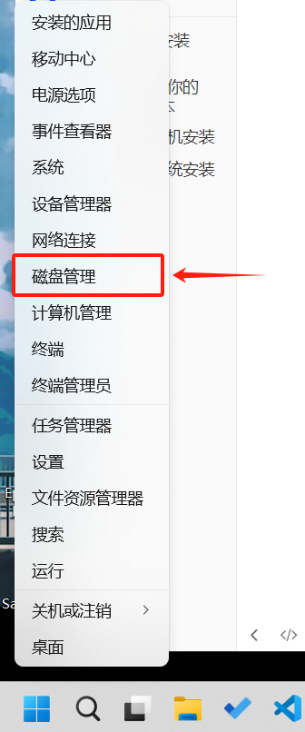
-
选择将要装系统的磁盘，右键选择属性，选择“卷” 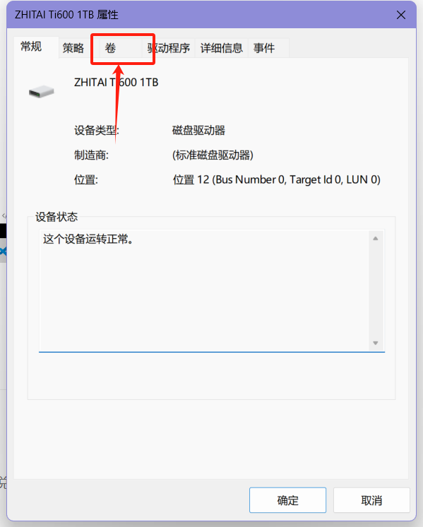
-
在卷里查看自己的引导方式 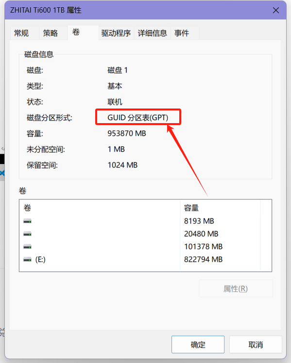
-
如果是GPT，很好，
你过关! -
如果不是，执行下面操作 1. 打开傲梅分区助手 2. 右键选中磁盘 3. 选择转化为GPT硬盘 你是MBR就会有转化为GPT硬盘，这里笔者的已经是GPT硬盘了 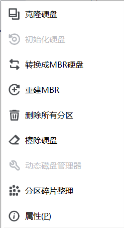
- 等待转化完成
3.1.2关闭windows快速启动
-
-
win + X打开终端管理员 -
输入
powercfg -h on确保休眠模式打开 -
关闭终端
-
打开控制面板

- 选择硬件和声音
- 选择电源设置
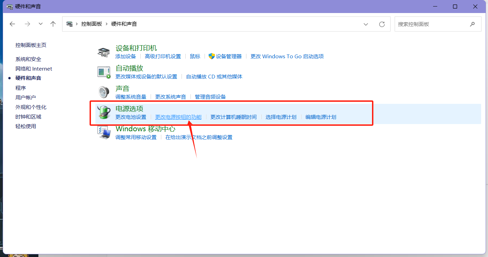
- 选择更改当前不可用的设置
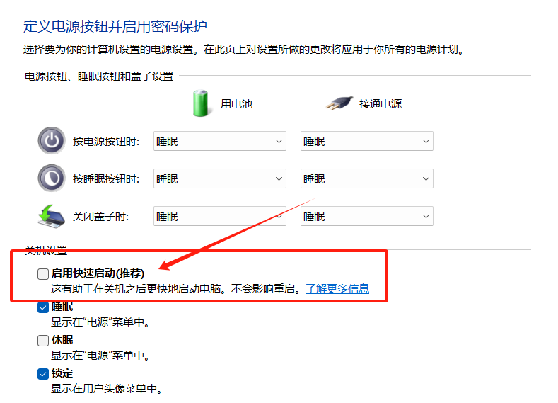
- 关闭快速启动
- 打开终端管理员
- 输入
powercfg /a检查 - 重启
-
3.1.3进入Bios/UEFI [!操作失误有风险]
- 上网寻找如何进入自己电脑品牌的Bios
- 进入bios
- SecureBoot 改成 Disabled，禁用安全启动(部分机型需设置 BIOS 密码才可以修改 Secure Boot，找到Set Supervisor Password 设置密码)
- 退出biso
- 重启进入windows
3.1.4EFI扩容
Important
EFI区含有windows启动的引导文件，我们扩容的EFI实际上是删去原来的EFI分区建立一个新的Fat32分区并建立引导文件，操作不当可能会导致无法进入Windows系统内
参考了b站BV1CT411c7n4的方法
从C盘划分区域用于扩大EFI分区
- 打开磁盘管理
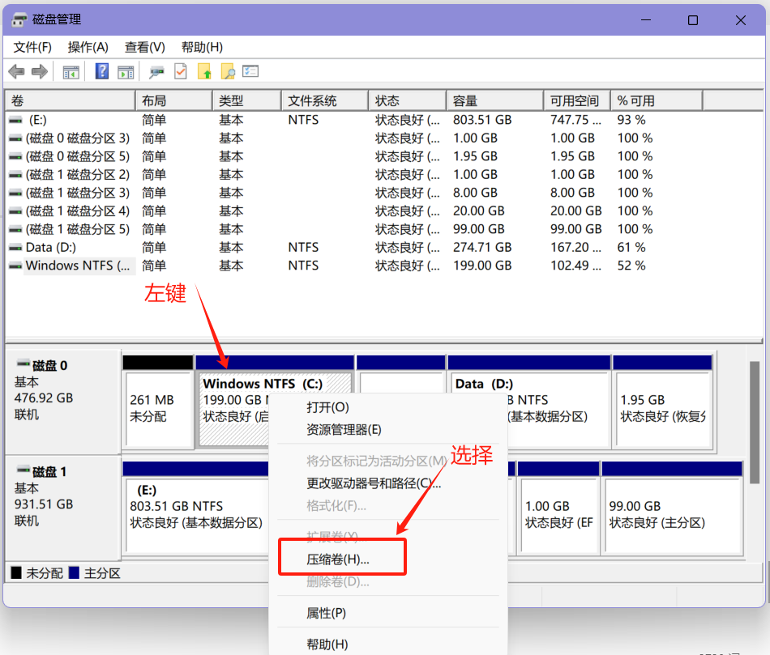
- 压缩一个卷[大小一定要超过320M][建议1G]
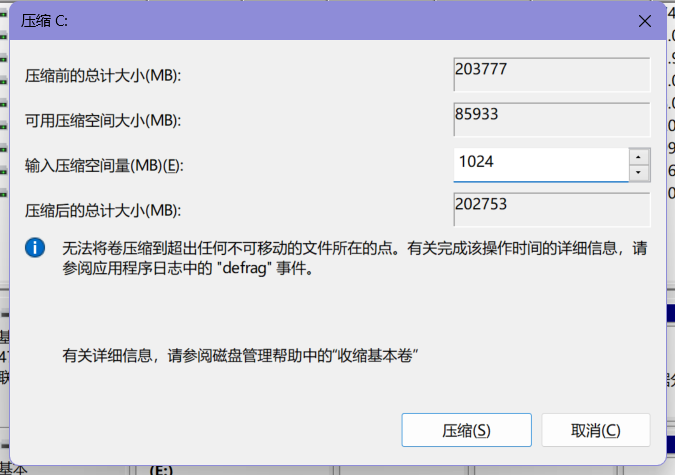
- 搜索cmd
- 选择以管理员身份运行
- 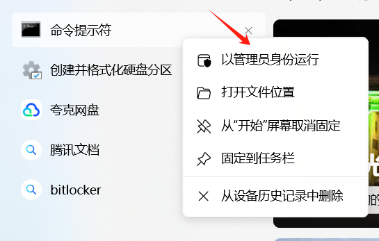
- 按照下面输入
diskpartlist diskselsct disk 0list partitioncreate partition efiformat quick fs = fat32assign letter = P[输入这个时请确保P盘符没有被占用，如果被占用，则修改]list volumelist partition[检查新建的分区是否存在,一般没问题]exitbcdboot C:\windows /s P: /f UEFI[注意这里的P一定要与上文建立的新盘符相同]exit
- 现在新的UEFI/boots启动已经完成
- 重启
- 删去原来的EFI分区
- 启动diskgenius
- 选择大小为260/100M的带有fat32标识的磁盘分区
- 选择删除分区[请确保新的EFI分区已经建立]
- 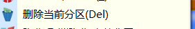
- 重启
- 如果正常进入系统说明扩容成功
- 现在隐藏盘符P
- 打开傲梅分区助手
- 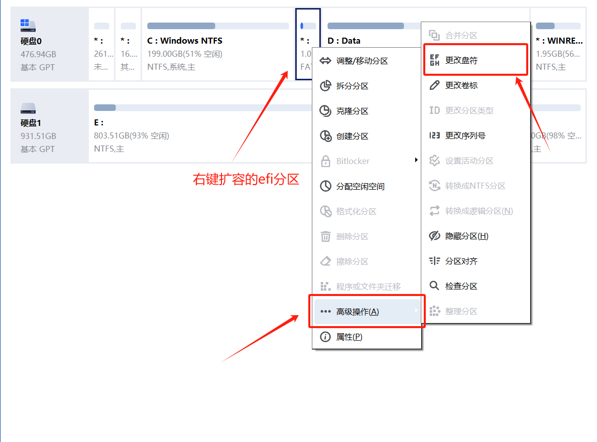
- 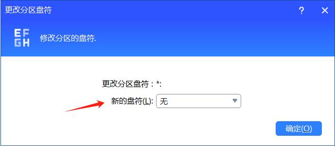
- 执行操作并退出
3.2 开始操作
3.2.1 安装前操作
3.2.1.1 制作启动盘
- 下载你需要的linux版本的iso文件,[linux下载](###2.2 下载Linux系统iso(系统映像文件))
- 插入U盘
- 用Rufus制作启动盘
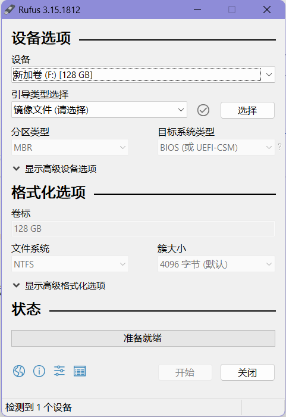
- 修改引导类型选项，选择非可引导，修改分区类型，选择GPT
- 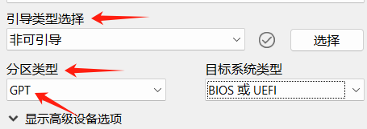
- 点击“选择”，选择你下载的iso文件
- 等待
- 点击开始
- 等待结束
- 结束后退出
3.2.1.2 为linux划分磁盘
-
打开 磁盘管理
-
从你要安装盘中选择一个空间大的盘选择压缩盘[不能是C盘!!!]
-
压缩大小看个人实际需求，建议大于45G,笔者划分了128G[
把博德之门删掉正好] -
压缩完成后无需格外操作，退出
3.3 关机进入U盘启动安装linux
Tip
这里以安装manjaro为例子
- 首先高级重启电脑
- 路径：
Windows设置--更新和安全--高级选项--恢复--高级启动--立即重新启动
3.4进入U盘启动界面开始安装
成功从U盘启动后，首先会进入配置界面，唯一需要注意的是driver的选择
driver选择free还是nofree因电脑配置而异，以下仅供参考：
| CPU | 显卡 | 选择 |
|---|---|---|
| Intel | 无独显 | free |
| AMD | 无独显 | free |
| AMD | NVIDIA | no free |
| Intel | AMD | free |
| Intel | NVIDIA | no free |
设置完毕后，enterBoot进入桌面
-
然后会让你选择开始安装，建议先调整为中文，联网[在桌面右下角]
-
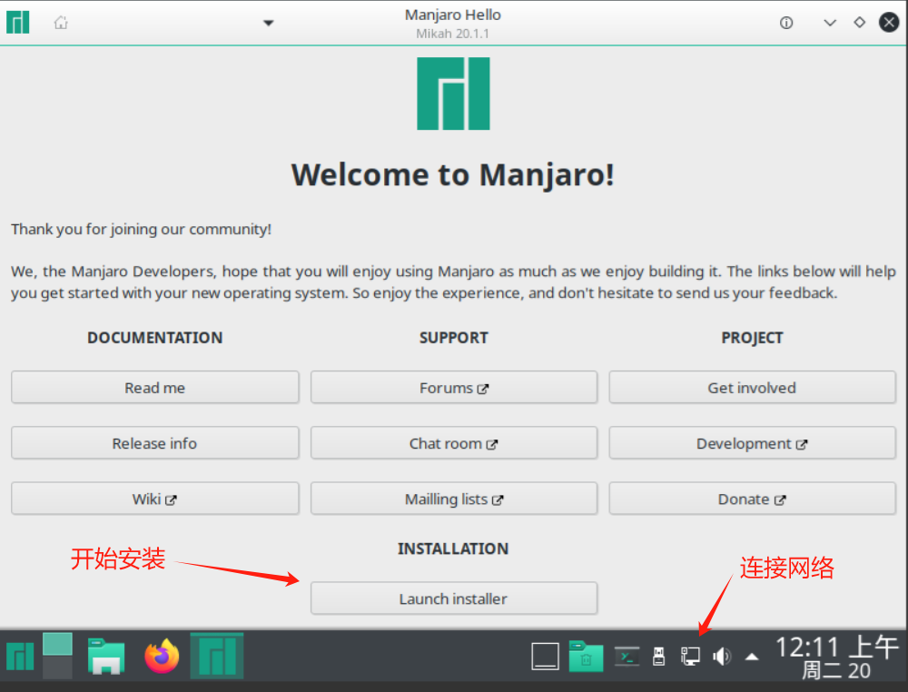
-
时区选上海，键盘样式默认即可
Important
分区
- 选择手动分区
- 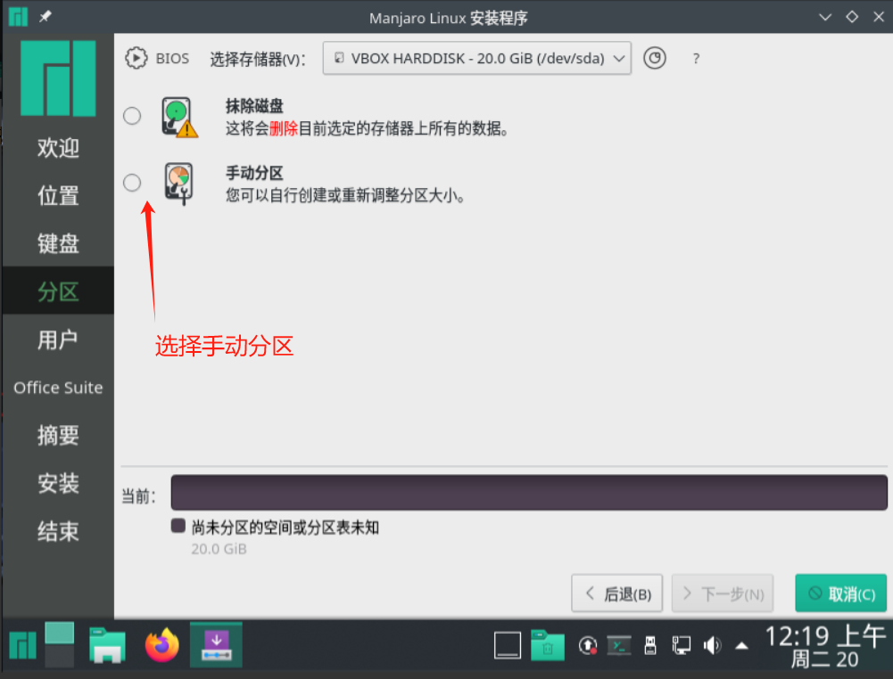
- 找到你划分空间的那个盘
- 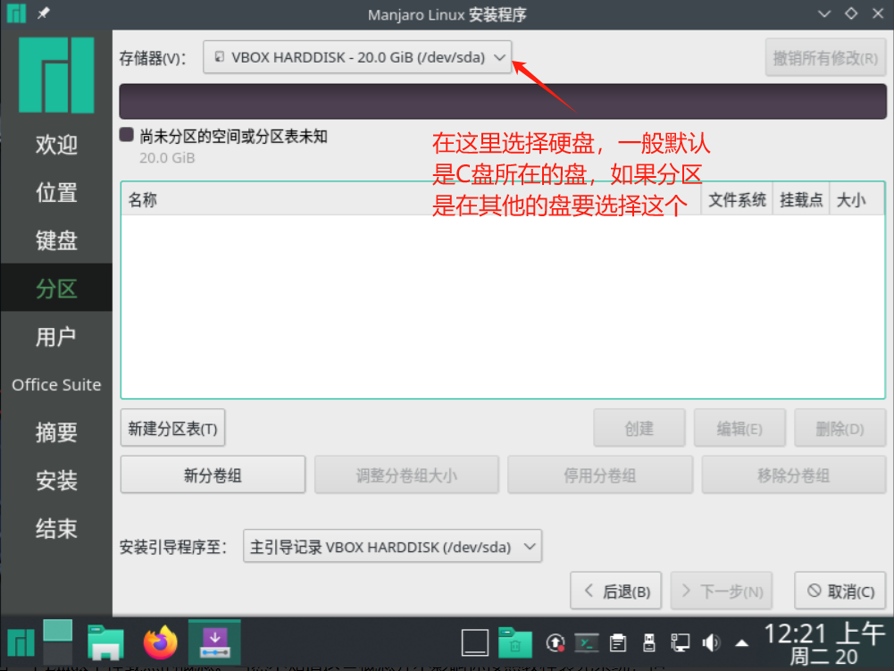
- 选择你划分出来的磁盘空间[一般叫做未分配区域]
- 选择创建:
- 创建如下四个区域
- swap区域，一般8G,文件系统选择linuxswap
- 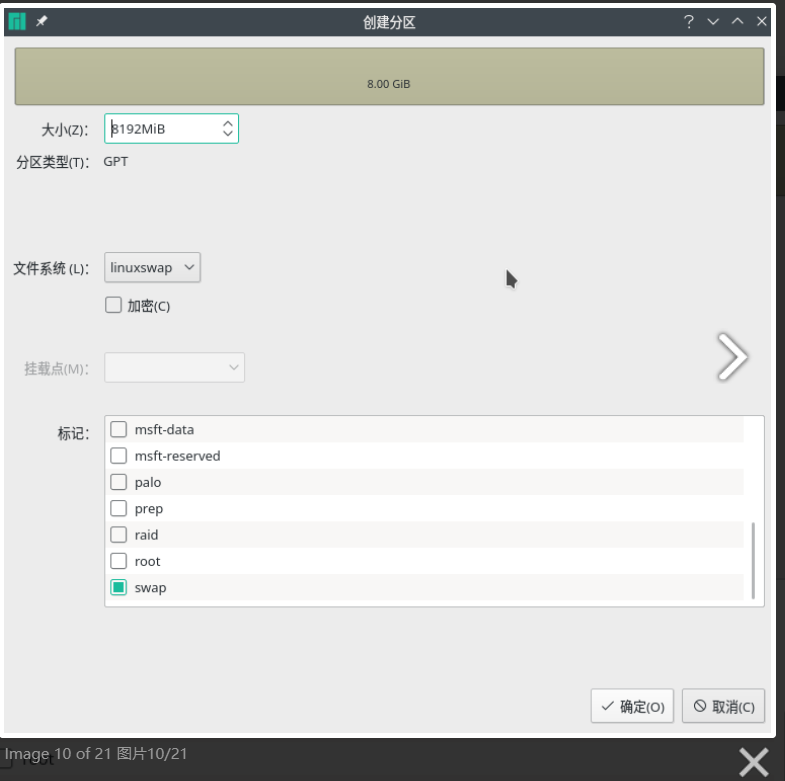
- boot区域，一般500M~1G,文件ext4，挂载点/boot
- 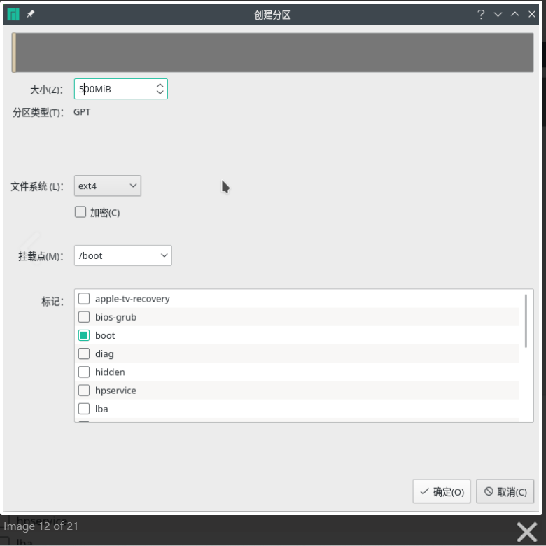
- 创建root根目录，大小在20G~40G，建议大一点
- 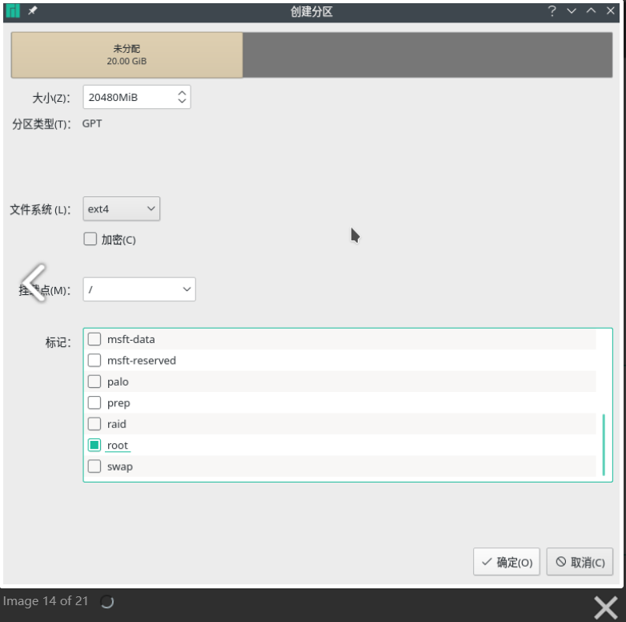
- 建立/home挂载点
- 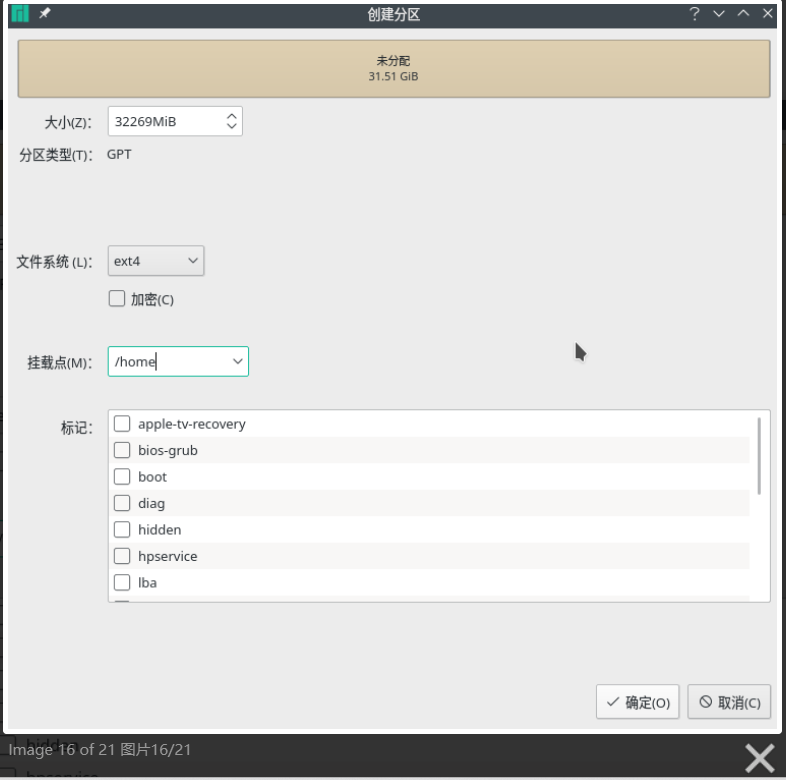
- important
- 建立挂载点
- 返回C盘所在的硬盘空间
- 找到带有FAT32的大小为1G的分区
- 点击编辑
- 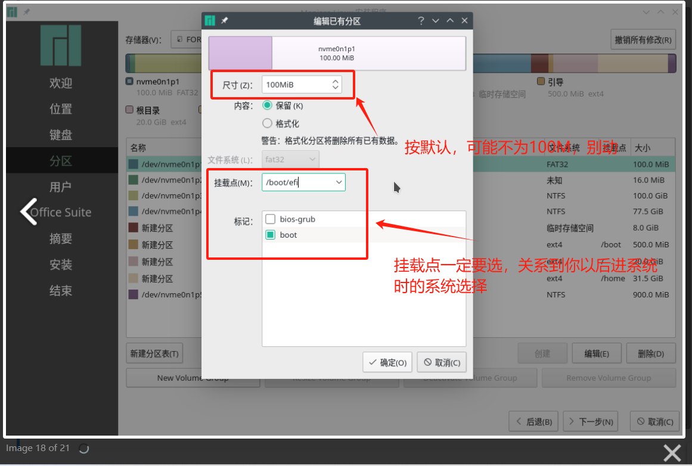
- 全部完成后检查一遍，点击下一步
- 输入用户名，密码，选择“为管理员账户使用相同的密码”记住密码！！！
- office建议不装
- 所有完成后点击安装
3.3 安装完成后的操作
- 安装完成后可以重新启动，然后就会看到UEFI引导，选择系统进入
- 可以看这个完成安装后的初始化
by imicola
参考文献：
注释
- 关于arch linux的安装，这篇博客可以提供一些指引作用
Footnotes
-
校园网可能无法使用桥接功能，可以买个路由器来解决，原理就是用路由器的 DHCP 功能，来管理分配 IP 地址，这样就可以使用桥接网络了，嫌麻烦也可以选择使用主机网络 ↩